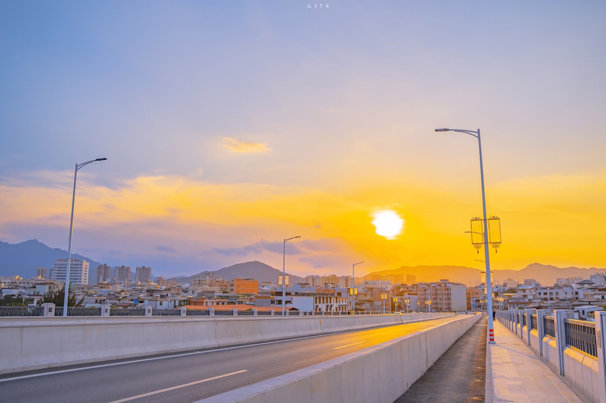

经济

综述
经省统计局统一核算，2019年全市实现地区生产总值（初步核算数）1080.03亿元，比上年增长5.5%。其中，第一产业增加值121.17亿元，增长5.0%，对全市经济增长的贡献率为10.3%，拉动地区生产总值增长0.6个百分点；第二产业增加值371.81亿元，增长5.7%，对全市经济增长的贡献率为39.6%，拉动地区生产总值增长2.2个百分点；第三产业增加值587.04亿元，增长5.4%，对全市经济增长的贡献率为50.1%，拉动地区生产总值增长2.7个百分点。三次产业结构由上年的10.7：34.6：54.7调整为11.2：34.4：54.4。2019年，全市人均地区生产总值34842元，增长5.3%，按平均汇率折算为5051美元。全年固定资产投资比上年增长19.3%。全年实现地方一般公共预算收入77.48亿元，增长0.7%。地方一般公共预算支出370.22亿元，增长11.8%。
第一产业
2019年，河源市农林牧渔业总产值189.44亿元，比上年增长5.6%；其中，农业产值106.45亿元，增长5.7%；林业产值32.86亿元，增长12.3%；牧业产值41.93亿元，下降0.4%；渔业产值5.13亿元，增长6.4%；农林牧渔服务业产值3.08亿元，增长7.0%。
全年粮食种植面积为13.06万公顷，比上年增加205公顷。糖料种植面积1159公顷，比上年增加299公顷；油料种植面积2.37万公顷，比上年增加788公顷；蔬菜种植面积3.69万公顷，比上年增加1837公顷。全年粮食总产量79.33万吨，其中稻谷75.77万吨，增长2.7%。糖蔗产量8.71万吨，增长35.7%；花生产量7.56万吨，增长3.4%；蔬菜产量74.82万吨，增长5.3%；水果产量43.72万吨，增长5.1%；茶叶产量6928吨，增长15.1%。水产品总产量4.49万吨，增长5.3%。
国家现代农业示范区：灯塔盆地国家现代农业示范区 。
省级现代农业产业园：紫金县茶叶产业园 、和平县猕猴桃产业园 、连平县鹰嘴蜜桃产业园 、河源市（东瑞）生猪产业园、源城区蔬菜产业园、东源县板栗产业园 、东源县茶叶产业园、和平县腐竹产业园
。
国家地理标志产品：河源米粉、连平鹰嘴蜜桃、和平猕猴桃 、紫金春甜柑 。
第二产业
2019年，河源市实现全社会工业增加值334.61亿元，比上年增长6.0%。年末全市共有规模以上工业企业625家，比上年末增加8家，其中年产值超亿元的206家。实现规模以上工业增加值301.43亿元，比上年增长6.1%，其中，民营企业增加值187.23亿元，增长7.1%。高技术制造业增加值116.59亿元，比上年增长6.5%，先进制造业增加值156.44亿元，比上年增长9.5%，优势传统产业增加值71.37亿元，比上年增长1.9%，六大高耗能行业增加值比上年增长9.8%，全市规模以上工业经济效益综合指数220.13%，比上年提高10.9个百分点。全市工业园区规模以上工业企业528家，比上年增加7家；实现工业增加值261.94亿元，增长5.8%，增速比全市规上工业低0.3个百分点；实现入库税收25.03亿元，下降0.02%。全年全社会建筑业增加值72.73亿元，按可比价格计算，比上年增长4.2%。全年具有资质等级以上建筑施工企业135家，比上年增加9家。
省级产业转移工业园：深圳（河源）产业转移工业园、深圳盐田（东源）产业转移工业园、河源市江东新区产业转移工业园、深圳福田（和平）产业转移工业园、深圳宝安（龙川）产业转移工业园、龙华（紫金）产业转移工业园、大鹏（源城）产业转移工业园、连平县生态工业园
。
第三产业
2019年河源批发和零售业增加值比上年增长3.0%，住宿和餐饮业增加值增长1.8%，金融业增加值增长8.0%，房地产业增加值增长3.2%，其他服务业增加值增长8.0%。现代服务业增加值280.25亿元，增长5.3%，占服务业的比重为47.7%。生产性服务业增加值126.23亿元，增长5.0%，占服务业的比重为21.5%。全年规模以上服务业企业实现营业收入44.67亿元，比上年增长7.1%。
社会消费品零售总额677.40亿元，比上年增长7.7%。分地域看，城镇消费品零售额551.09亿元，增长7.2%；乡村消费品零售额126.31亿元，增长10.1%。分行业看，批发业零售额104.06亿元，增长7.7%；零售业零售额526.13亿元，增长7.8%；住宿业零售额18.61亿元，增长7.2%；餐饮业零售额28.60亿元，增长8.0%。限额以上单位批发零售业实现零售额121.05亿元，增长0.6%。
进出口总额303亿元，比上年增长11.9%，其中出口总额251.2亿元，增长16.7%。在出口总值中，河源对美国、香港、欧盟（28国）、日本、东盟（10国）、台湾的出口额共202.4亿元，占全市出口总额的比重达80.6%。全市工商登记在册的外商及港澳台商投资企业2125家，比上年减少25家。全年签订利用外商直接投资项目87个，合同利用外商直接投资31.93亿元，比上年下降63.9%；实际利用外商直接投资5.96亿元，比上年增长43.1%。
全市金融机构本外币各项存款余额1448.09亿元，比上年末增长5.2%，全市入驻证券经营机构（营业部）9家。证券代理交易额1342.66亿元，比上年增长46.1%。证券客户交易结算资金余额6.79亿元，增长74.9%；指定与托管证券市值为49.36亿元，增长16.1%；年末证券投资者开户数(资金户)为248158户(其中B股1219户)，比上年末增长14.1%。
全市保险公司28家，其中财产保险主体16家，人寿保险主体12家。全年实现保费收入40.91亿元，比上年增长18.4%。其中，财产保险保费收入13.11亿元，增长11.1%，人身保险保费收入27.80亿元，增长22.1%。全年共支付各项赔款及给付12.24亿元，增长8.7%。其中，财产保险赔款支出6.52亿元，增长11.6%，人身保险赔付支出5.72亿元，增长5.6%。